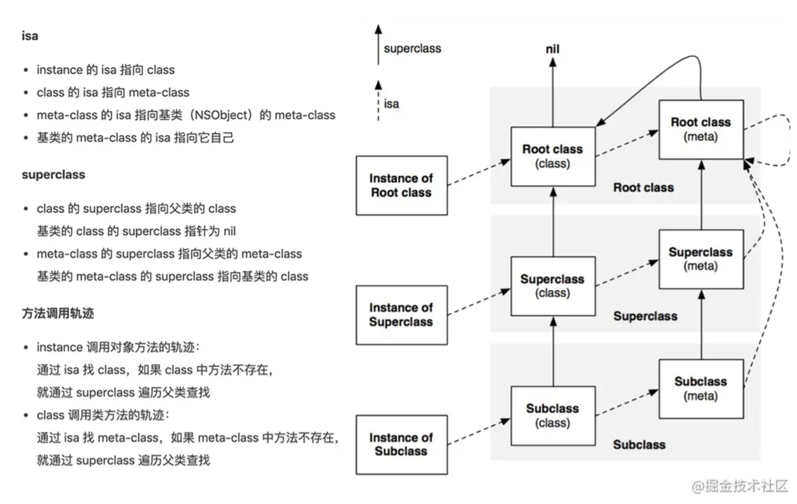
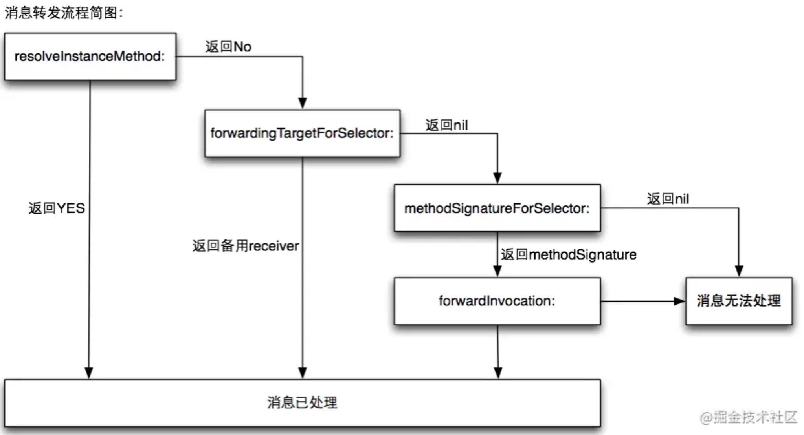

Runtime 消息发送
在 Obj-C 中为什么叫发消息而不叫函数调用？
Runtime 的方法调用流程
Objetive-C的消息发送，是通过objc_msgSend来实现的，具体执行过程，主要分三个阶段：
-
消息发送；
-
动态方法解析
-
消息转发或重新签名
消息发送

消息转发
在消息发送阶段会在对应的类的方法列表中搜索方法，如果找不到就会执行消息转发，消息转发的提供了三次机会：
- 动态方法解析
- 备用接收者
- 完整的消息转发

动态方法解析
首先，ObjC 运行时会调用 +resolveInstanceMethod:或者 +resolveClassMethod:，让你有机会提供一个函数实现。如果你添加了函数并返回YES， 那运行时系统就会重新启动一次消息发送的过程。
实现一个动态方法解析的例子: 虽然 ViewController 中没有实现 eat: 方法，但是通过 class_addMethod 动态添加 eatMethod 函数，并执行eatMethod这个函数的 IMP:
#import "ViewController.h"
#import <objc/runtime.h>
@interface ViewController ()
@end
@implementation ViewController
- (void)viewDidLoad {
[super viewDidLoad];
[self performSelector:@selector(eat:)];
}
+ (BOOL)resolveInstanceMethod:(SEL)sel {
if (sel == @selector(eat:)) {
class_addMethod([self class], sel, (IMP)eatMethod, "v@:");
return YES;
}
return [super resolveInstanceMethod:sel];
}
void eatMethod(id obj, SEL _cmd) {
NSLog(@"Eating!");
}
@end
备用接收者
如果目标对象实现了 -forwardingTargetForSelector:，Runtime 这时就会调用这个方法，给你把这个消息转发给其他对象的机会。
实现一个备用接收者的例子如下：
1.Person 类作为备用接收者，实现了 eat 方法：
@interface Person : NSObject
@end
@implementation Person
- (void)eat {
NSLog(@"%@ - %@", [self class], NSStringFromSelector(_cmd));
}
@end
2.在 ViewController 中通过f orwardingTargetForSelector 把当前 ViewController 的方法转发给了 Person 去执行。
#import "ViewController.h"
#import <objc/runtime.h>
#import "Person.h"
@interface ViewController ()
@end
@implementation ViewController
- (void)viewDidLoad {
[super viewDidLoad];
[self performSelector:@selector(eat)];
}
+ (BOOL)resolveInstanceMethod:(SEL)sel {
return YES;
}
- (id)forwardingTargetForSelector:(SEL)aSelector {
if (aSelector == @selector(eat)) {
return [[Person alloc] init];
}
return [super forwardingTargetForSelector:aSelector];
}
@end
完整的消息转发
如果在上一步还不能处理未知消息，则唯一能做的就是启用完整的消息转发机制了：
- 首先它会发送
-methodSignatureForSelector:消息获得函数的参数和返回值类型 - 如果
-methodSignatureForSelector:返回nil ，Runtime 则会发出-doesNotRecognizeSelector:消息，程序这时也就挂掉了 - 如果返回了一个函数签名，Runtime 就会创建一个
NSInvocation对象并发送-forwardInvocation:消息给目标对象。
@interface Person : NSObject
@end
@implementation Person
- (void)eat {
NSLog(@"%@ - %@", [self class], NSStringFromSelector(_cmd));
}
@end
Runtime 生成一个 NSInvocation 对象，发送给了 forwardInvocation，在 forwardInvocation 方法里面让 Person 对象去执行 eat 方法 :
#import "ViewController.h"
#import <objc/runtime.h>
#import "Person.h"
@interface ViewController ()
@end
@implementation ViewController
- (void)viewDidLoad {
[super viewDidLoad];
[self performSelector:@selector(eat)];
}
+ (BOOL)resolveInstanceMethod:(SEL)sel {
return YES;
}
- (id)forwardingTargetForSelector:(SEL)aSelector {
return nil;
}
- (NSMethodSignature *)methodSignatureForSelector:(SEL)aSelector {
if (aSelector == @selector(eat)) {
// 生成一个 NSMethodSignature 对象，接着会调用 forwardInvocation 方法
return [NSMethodSignature signatureWithObjCTypes:"v@:"];
}
return [super methodSignatureForSelector:aSelector];
}
- (void)forwardInvocation:(NSInvocation *)anInvocation {
SEL selector = anInvocation.selector;
Person *person = [[Person alloc] init];
if ([person respondsToSelector:selector]) {
[anInvocation invokeWithTarget:person];
} else {
[self doesNotRecognizeSelector:selector];
}
}
@end
NSMethodSignature 和 NSInvocation
在消息转发的时候会使用到 NSMethodSignature 和 NSInvocation 这两个类：
- NSMethodSignature：方法签名，一个对于方法返回值和参数的记录。
- NSInvocation：把消息呈现为对象形式。可以存储消息的所有配置和直接调用给任意对象，这就是万物皆对象的一种实践了。这个东西就是苹果工程师提供的一个高层消息转发系统。他是一个命令对象，可以给任意OC对象发送消息，那么与之类似的还有一个performSelector。
NSMethodSignature
NSInvocation
NSInvocation 和 performSelector 对比：
- performSelector：最多接收两个参数，如果参数多余两个 ，就需要组装成字典类型了
- performSelector：参数类型限制为id，如果用普通配型Int Double NSInteger为参数的方法使用时会导致一些诡异的问题
NSInvocation 使用的步骤：
- 根据
selector来初始化方法签名对象NSMethodSignature - 根据方法签名对象来初始化
NSInvocation对象，必须使用invocationWithMethodSignature:方法 - 设置默认的
target和selector - 设置方法签名对应的参数，从下标2开始，超出签名参数index就越界报错
- 调用
NSInvocation对象的invoke方法 - 若有返回值，使用
NSInvocation的getReturnValue来获取返回值，注意该方法仅仅就是把返回数据拷贝到提供的内存缓存区，并不会考虑这里的内存管理。
Runtime 的应用
常见的应用：
- 实现多继承 Multiple Inheritance
- 方法交换 Method Swizzling，比如KVO 实现
- AOP 面向切面编程
- 关联对象(Objective-C Associated Objects)给分类增加属性
- 遍历类的所有成员变量（修改 textfield 的占位文字颜色、字典转模型、自动归档解档）
- 利用消息转发机制解决方法找不到的异常问题
- 消息转发(热更新)解决Bug(JSPatch)
如何运用 Runtime 字典转模型
Runtime 遍历 ivar_list,结合 KVC 赋值。
_cmd 关键字的作用？
_cmd 在 Objective-C 的方法中表示当前方法的 selector，正如同 self 表示当前方法调用的对象实例一样。
_cmd的使用
1.可以使用 _cmd 打印当前方法名:
- (void)viewDidLoad {
[super viewDidLoad];
NSLog(@"%@ - %@", [self class], NSStringFromSelector(_cmd)); // ViewController - viewDidLoad
}
参考：ObjC中_cmd的用法
@synthesize 和 @dynamic 关键字的作用？
-
@property有两个对应的词，一个是@synthesize，一个是@dynamic。 -
如果
@synthesize和@dynamic都没写，那么默认的就是@syntheszie var = _var -
@synthesize的语义是如果你没有手动实现setter方法和getter方法，那么编译器会自动为你加上这两个方法，同时为属性生成下划线成员变量。 -
@dynamic告诉编译器：属性的setter与getter方法由用户自己实现，不自动生成。（当然对于 readonly 的属性只需提供 getter 即可）。 假如一个属性被声明为 @dynamic var，然后你没有提供 @setter方法和 @getter 方法，编译的时候没问题，但是当程序运行到instance.var = someVar，由于缺 setter 方法会导致程序崩溃；或者当运行到someVar = var时，由于缺 getter 方法同样会导致崩溃。编译时没问题，运行时才执行相应的方法，这就是所谓的动态绑定。
使用场景
1.同时重写属性 @property 的 setter 和 getter 方法
使用 @property 指令，编译器会自动生成 setter 和 getter，单独重写 getter或setter，不会出现异常，但同时重写getter和setter，则会报错。
原因：同时重写 getter 和 setter 方法，系统就不会自动生成 _propertyName 变量，所以报错。
解决方案：添加 @synthesize propertyName = _propertyName;
@interface ViewController ()
@property (nonatomic, copy) NSString *name;
@end
@implementation ViewController
@synthesize name = _name;
- (void)viewDidLoad {
[super viewDidLoad];
}
- (void)setName:(NSString *)name {
_name = name;
}
- (NSString *)name {
if (!_name || _name.length == 0) return @"None Name";
return _name;
}
@end
isMemberOfClass 和 isKindOfClass 的区别？
-
isMemberOfClass方法是判断当前instance/class对象的isa指向是不是class/meta-class对象类型；
-
isKindOfClass方法是判断当前instance/class对象的isa指向是不是class/meta-class对象或者它的子类类型。isKindOfClass的范围更大。
如何理解OC是一门动态语言
OC的动态特性可从三方面描述:
-
动态类型识别（Dynamic typing）:最终判定该类的实例类型是在运行期间
-
动态绑定（Dynamic binding）：在运行时确定调用的方法
-
动态加载（Dynamic loading）：在运行期间可添加模块（类、方法）
动态类型识别
- OC中有一个可以表示任何实例对象类型的关键字--id，将对象声明为id类型，可根据需要，赋予不同类型的实例对象。
- 父类指针同样也可以指向子类实例对象，编译期指针类型为父类，运行后可判断为具体的某个子类。
- 这段代码也可以很好的解释OC的动态类型识别：NSData *test = [[NSString alloc] init]; 在编译期test被认为NSData类型，运行后则为NSString类型，其值为空字符串("")。
动态绑定
消息发送。
动态加载
-
动态添加属性：分类中使用关联对象添加属性
-
动态添加方法：通过class_addMethod 添加方法
-
动态添加类：比如KVO